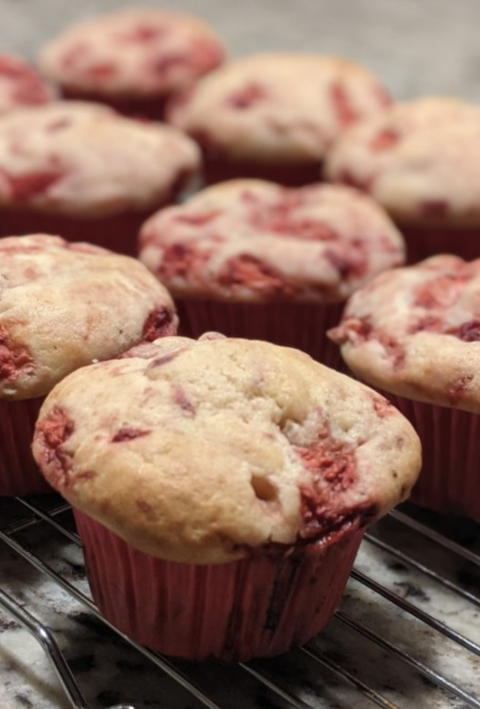

< Back to homepage
Strawberry Muffin

과일머핀 좋아세요? 저는 개인적으로 과일넣은 머핀이 초콜릿이나 너트종류 넣은 머핀보다 훨씬 맛있는 것 같아요. 그러나 물론 이거야 개인적인 취향이니 옳고 그른게 있는 게 아니니까요~ 아침 식사로 간단하게 먹기 좋아서 제가 이런 저런 머핀같은 걸 자주 구워놓거든요. 잔뜩 있는 Kefir요거트를 처리하느라고 이번엔 딸기 머핀을 구웠어요.
딸기머핀은 색도 핑크색이고~ 딸기가 들어갔기도 해서, 다른 때도 만들어먹을 수 있지만, 봄에 만들어 먹으면 더욱 맛나는 머핀인 것 같아요. 저는 냉동딸기 넣어서 만드는데, 물론 생딸기 넣으셔도 됩니다. 그럼 좀 더 단정한 색이 나올거예요. 근데 저는 개인적으로 블루베리도 그렇고 딸기도 그렇고 냉동을 써서 색이 번지는게 더 좋더라구요~ 가격도 더 저렴하고요 ^^
Ingredients
- 2 C all purpose flour
- 2 tsp all purpose flour (to mix with strawberries)
- 2 tsp baking powder
- 3/4 tsp salt
- 1/2 C unsalted butter
- 1 C sugar
- 2 eggs
- 1 1/2 tsp vanilla extract
- 2/3 C plain yogurt
- 2 C diced strawberries
Instructions
- Preheat the oven to 375°F and set an oven rack in the middle position.
- Combine dry ingredients (flour, baking powder and salt) in a midium-sized mixing bowl. Whisk well and set aside.
- In a large bowl, beat the butter and sugar for a few minutes until light and fluffy
- Add the egg one at a time, beating well after each addition.
- Beat in the vanilla extract and beat to combine.
- Gradually add the flour mixture(2), alternating with the yogurt. (about 1/3 each time.)
- In a small bowl, toss the strawberries with 2 tsp of flour.
- Set aside 1/3C of the strawberries for topping the muffins, and add the rest to the batter.
- Fold to combine.
- Spoon the batter into a muffin tin.
- Top with the reserved berries.
- Bake for about 30 minutes, until golden and set. Then let the muffins cool in the pan for about 25 minutes.
- Transfer the muffins to a rack to cool completely.